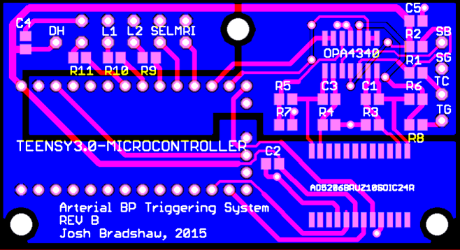

PCB Design
I opted to design a simple PCB for this project, so that more versions of this triggering unit can be produced with minimal effort.
Design Criteria
- Analog ground plane must be completely separated from the digital groundplane to avoid crosstalk on the sensitive op-amp circuits.
- Must use 10/10 thou minimum trace width and clearance, so that this board can easily be manufactured by anyone.
- Must meet the weird drill size restrictions of APcircuits, because they've the only vendor I've who will ship a few boards to SickKids on a quick turnaround for a reasonable price.
- Must use parts with >1mm pin pitch, so that it can easily be hand assembled by novices.
For anyone wishing to build this board, some moderate to advanced soldering is required. You can do it with very little experience, just follow this tutorial: Sparkfun SMD soldering tutorial. Make sure you buy top quality flux, solder and tweezers!
The Teensy eagle CAD library used in this design is available at the PJRC website.
PCB Manufacture
For PCB prototyping, I went with APcircuits.
Design:

Bare Board:
Assembled Board:
Things to fix in subsequent revisions
- One sub-optimal choice I made in the design process of this PCB was the decision to use a 6 channel digital potentiometer, when I'm currently only using two channels. I chose that part simply because I did the breadboard verion with a six channel pot, and because digikey didn't have the 2 or 4 channel version of the part in stock while I was putting the prototype together.
Related Questions and Uncertainty
- How much electromagnetic inferferance from the MRI machine will the instruments be exposed to when they're sitting in the control room of the 3T scanner, assuming that we scan with the door closed and the waveguide plugged with a conductive blanket?